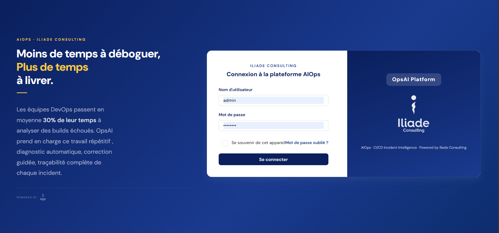
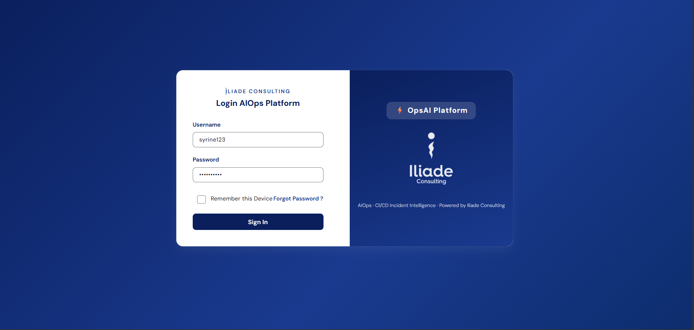
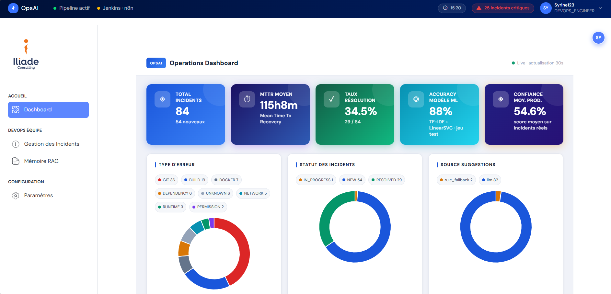
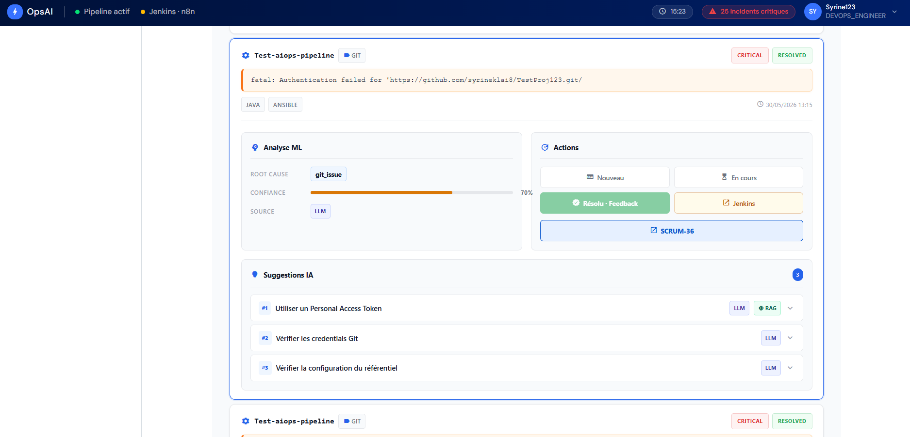
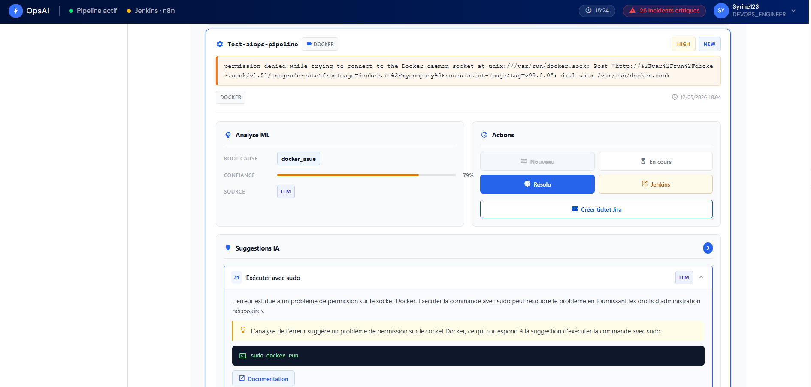
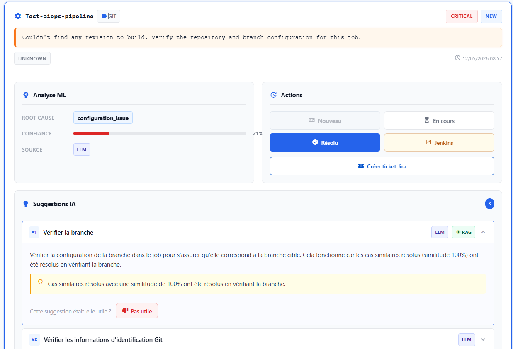

OpsAI : plateforme AIOps d'analyse d'incidents CI/CD
Stage de fin d'études | Iliade Consulting Tunisie | Fév – Juil. 2026
Quand un pipeline CI/CD échoue, les équipes DevOps perdent un temps précieux à lire des logs, trouver la cause puis la corriger. OpsAI automatise ce parcours de bout en bout : analyse des logs d'échec, classification de l'incident, identification de la cause racine et génération de recommandations de correction contextualisées.
- Microservices Angular, Spring Boot, services IA Flask
- 3 modèles ML comparés sur les logs CI/CD
- RAG + LLM ChromaDB et Groq
- Automatisation Jenkins, n8n, Jira
Complexité technique
- Architecture microservices en couches : frontend Angular, backend Spring Boot structuré en couches logiques avec une dizaine de contrôleurs (incidents, RAG, feedback, Jira), et services d'IA Flask dédiés.
- Orchestration et intégrations : workflows n8n, déclenchement et analyse des pipelines Jenkins, création et suivi de tickets Jira via l'API REST Atlassian.
- Pipeline Machine Learning : classification des logs CI/CD par type d'incident. J'ai comparé trois approches (Régression Logistique + TF-IDF, DistilBERT fine-tuné, TF-IDF + LinearSVC) et retenu TF-IDF + LinearSVC : le modèle Transformer sous-performait sur un jeu de données réduit et déséquilibré. Un choix argumenté plutôt que le modèle le plus à la mode.
- Amélioration continue par RAG : les résolutions validées par les ingénieurs sont indexées dans une base vectorielle (ChromaDB) et réutilisées pour enrichir les recommandations sur des incidents similaires, via un LLM (Groq). Plus la plateforme est utilisée, plus ses réponses gagnent en pertinence.
- Esprit critique sur l'IA : réflexion sur la validité du jeu de données, la représentation des classes, la méthode de validation croisée et le choix des seuils de similarité du RAG.







.png)